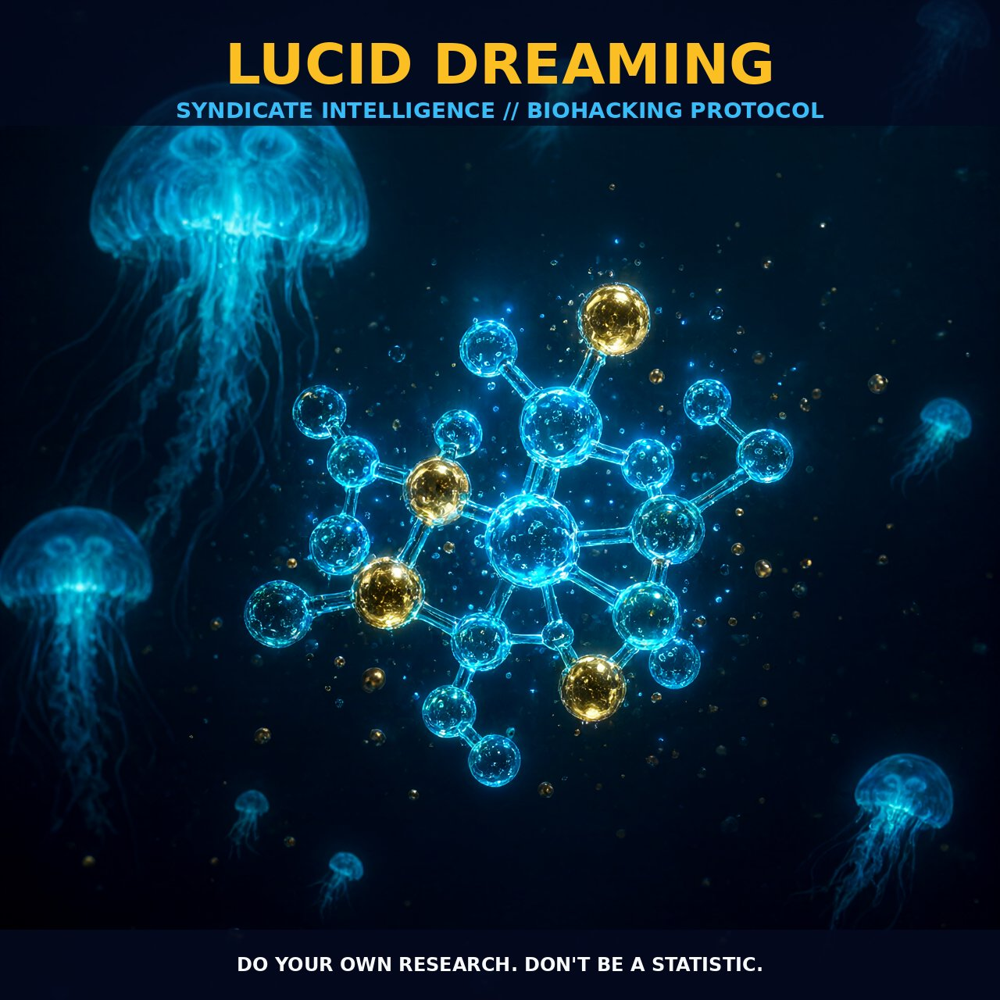

Neurobiological Modulation of Executive Function in Lucid Dream

1. The Neurobiological Architecture of Lucidity
Lucid dreaming is not merely a psychological anomaly but a distinct neurobiological state. In this phase, consciousness decouples from the sensory input of waking life while remaining fully integrated with the dream narrative. Research confirms that during this clear-sighted state, the dreamer possesses the capacity to reason logically, recall waking conditions, and execute voluntary actions despite being in deep sleep.
This phenomenon challenges the traditional view of dreaming as a passive process. Instead, it suggests that the dreaming brain retains high-level executive function. The individual becomes an active participant within the mental construct, able to reflect on the dream environment and influence its trajectory through conscious intent. It is a state where self-awareness is modulated without full awakening.
While most dreams occur when the prefrontal cortex—responsible for critical reasoning and self-monitoring—is largely inactive, lucid dreaming reactivates these regions. This reactivation enables the dreamer to recognize the illusory nature of their current reality while maintaining the physiological markers of sleep. It is a unique psychological tool that bridges the gap between subjective experience and objective neural processing.
2. Biological Leverage and Internal Control
The lucid state offers a platform for intense psychological processing, leveraging the brain's plasticity during the dream phase. Psychologists and consciousness researchers view this as a prime opportunity to explore the largely unknown parts of the self, using the dream as a microcosm of the mind. The content of dreams reveals intimate personal creations, colored by who we are and who we could become.
By maintaining awareness, one can engage with dream symbols and narratives directly, potentially accelerating psychological integration and emotional processing that might take longer in waking life or standard REM cycles. This state facilitates a form of internal control distinct from waking voluntary movement.
In lucid dreams, one does not just observe but acts within the dream according to plans decided upon before sleep or through immediate reflection. The motor cortex and visual processing areas are sufficiently engaged to support complex interaction. This robust synchronization between neural networks creates a state of optimized cognitive function where usual filters of reality are suspended, allowing direct access to subconscious material without external sensory interference.
3. Tactical Implementation Protocol
To cultivate lucidity, practitioners must focus on dreamsign awareness. This involves identifying objects or events in dreams that are impossible or improbable in waking reality. These dreamsigns serve as potent triggers for initiating lucidity because they signal a break in normal physical laws.
Research indicates that individuals with high awareness of the strangeness of these signs are more likely to reach a lucid state during a dream episode. You should maintain a detailed dream journal, tracking dates and specific dreamsigns to build a personal inventory of recurring patterns that precede or signal lucidity.
The practical application involves setting a target for each night based on your recorded dreamsigns. By consistently rating your awareness levels and reviewing your journal entries, you can refine your ability to recognize the dream state in real-time. This method moves beyond passive waiting to active engagement, using the brain's natural propensity for pattern recognition to trigger consciousness.
Prostar Life Hack
Cultivate high awareness of the strangeness of dreamsigns and maintain a detailed journal to track recurring patterns before sleep. This strategic focus on pattern recognition triggers lucidity in real-time, moving you from passive observation to active control within the mental construct.
Prostar Life Hack
Cultivate high awareness of the strangeness of dreamsigns and maintain a detailed journal to track recurring patterns before sleep. This strategic focus on pattern recognition triggers lucidity in real-time, moving you from passive observation to active control within the mental construct.
[ AUTHOR: LEAD TECHNICAL RESEARCHER ]